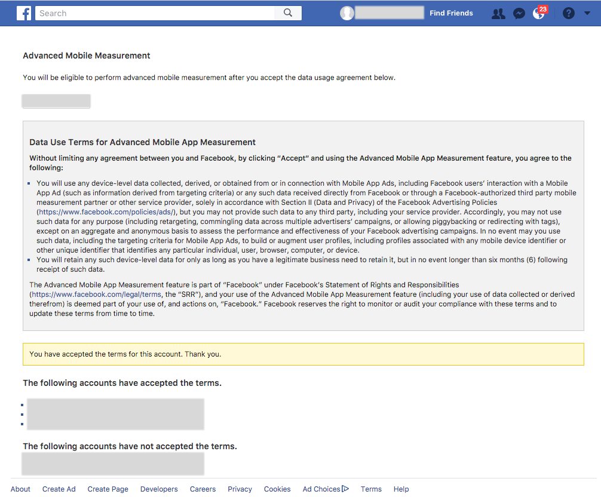
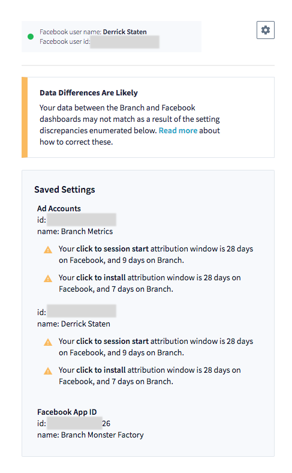

Facebook Ads FAQ and Advanced Options¶
FAQ¶
What is Facebook MMP?¶
"Work with a Facebook Marketing Partner to get deeper insights or measure across several ad networks" (Facebook - "Measuring for App Ads").
The acronym MMP is used to mean either the broad category of Facebook Mobile Marketing Partners, or more narrowly to mean Mobile Measurement Partners. The latter is a special subset of Facebook partners that have access to device-level attribution data. Branch has been vetted by Facebook and joined this group of partners in order to provide both granular analytics and true cross-channel reporting. We help you measure which installs, opens and conversion events should be attributed to Facebook ad campaigns versus other marketing efforts.
How does Branch attribute events to Facebook ads?¶
Facebook is a self-attributing network. This means that Facebook claims credit for installs and other events. This differs from some ad networks, which send a stream of impressions and clicks that Branch then matches to events. Branch then compares these claims against other ad networks, as well as traffic coming from email, your website, and other sources, choosing the most recent click to get credit.
The Branch SDK already helps you track installs and other events. When you enable the Facebook MMP integration, Branch sends events and advertising IDs to Facebook. Facebook then reports whether devices previously viewed or clicked a Facebook ad, including helpful information such as campaign, ad set, and ad. As stated above, Branch then dedupes these claims against other claims for attribution.
How can I use deep links in Facebook ads?¶
Creating a deep link is easy! First, make sure you have set up the integration with Facebook MMP on the Branch Dashboard. Then navigate to the Facebook page under Partner Management and click "Create Facebook Link".
Longer instructions can be found in the guides linked to from the Facebook overview page. For example, see this section of the App Installs guide.
How can I attribute conversion events to Facebook ads?¶
First, make sure you have set up the integration with Facebook MMP on the Branch Dashboard. Second, set up tracking for Standard Events. It's that simple! We will automatically attribute events to Facebook ads.
There are advanced options for tracking events, which you can read more about below.
What are the permissions you ask for as part of the onboarding process, and why?¶
| Permissions (OAuth scopes) | Why |
|---|---|
| ads_read | Pulling marketing insights data (e.g. impressions, clicks) to present on the Branch Dashboard. Also used for pulling creative name and id, etc., to provide richer analytics for installs, opens and other events. |
| business_management | (1) We pull in ad accounts for you to choose from. (2) At the end of the login process, we add our System User to your business and ad account with REPORTS_ONLY permissions. Then we will no longer store the access token that has both of these permissions (ads_read and business_management). In the future, we can easily quarantine/decommission the System User if we detect unusual or unauthorized activity. |
What is each piece of information needed during the onboarding process, and why?¶
| Identifier | Why |
|---|---|
| Ad account | Pulling marketing insights data (e.g. impressions, clicks) to present on the Branch Dashboard. |
| Facebook App ID | Sending installs, opens and other events to Facebook in order to see whether they were driven by a Facebook ad campaign. |
I'm having problems finding or choosing the correct ad account(s)¶
The ad account I want to select is greyed out¶

If you are not an admin of the business linked to an ad account, you will not be able to add it. This is because we will not be able to add our System User for attribution and analytics purposes. To check whether you are a business admin, please visit the business's settings page. If you can see yourself listed, and you can see that your role is shown as admin (see image below), you should be able to complete setup. Otherwise, please request that an admin at your business complete the setup on the Branch Dashboard.

If you still have questions, please contact us and include "Facebook MMP + Business Admin" in the subject.
I see a warning underneath my ad account saying that I need to be an admin¶

If an ad account is not linked to a business, then we cannot guarantee that this account setup will succeed. Please visit the ad account settings page, navigate to the appropriate ad account, and ensure you are an admin (see image below).

If you still have questions, please contact us and include "Facebook MMP + Standalone Ad Account(s)" in the subject.
I can't see the ad account I want to use at all¶
Please try logging out and logging back in on Facebook. Note the email address that you use. If you still do not see ad accounts, please visit business.facebook.com and ensure that you use the same email address / Facebook account. If you still cannot figure this out, please contact us and include "Facebook MMP + Missing Ad Account(s)" in the subject.
What is the difference between your previous Facebook Ads product, and the new Facebook Ads product?¶
Branch is now a Facebook Mobile Measurement Partner (MMP). This means we are partnering with Facebook to more accurately attribute your installs, opens and custom events back to Facebook ad campaigns!
The major differences: we can use this product without a Branch deep link. No need to manually create Branch links and add them to Facebook ads!
If you use a Branch deep link, we will still return the Branch deep link information in app so that you can deep link your users to content. Attributed events will not have the Branch deep link information, but rather the Facebook ad campaign information. This info cannot be passed along to third parties via our Data Integrations.
Does Branch provide view-through (impression) attribution for Facebook?¶
Branch is able to provide device-level view-through attribution for installs only, for up to 24 hours from impression to install. This is what is available via the MMP API that Facebook has exposed. It's also possible that if other app events (such as opens) occur shortly after an install, we can attribute those back to the same impression/view.
How do I upgrade from the old Facebook integration to the new Facebook integration?¶
Easy. Navigate to Facebook within the Ads Management portal. Choose "Connect with Facebook" and follow the guide to set up the integration with Facebook MMP.
The moment you complete this signup flow, we will upgrade you to getting the full MMP functionality! Now installs and other analytics will include info on campaign, ad set, ad, and creative from Facebook.
I think I previously had Facebook enabled...¶
...but now when I navigate to Facebook within the Ads Management portal, I just see "Connect with Facebook". What gives?
We've hidden the old Facebook setup flow. Please choose "Connect with Facebook" and follow the guide to set up the integration with Facebook MMP.
The previous signup flow is no longer supported. If for some reason you need to access the previous signup flow, please contact us and include "Facebook MMP + legacy signup flow" in the subject.
What happens to campaigns in which I'm using deep links?¶
We still highly recommend you use links in ads. Studies have shown that when you deep link your users, they have a better experience and retention is higher!
When you put a Branch link in a Facebook ad, we still return this link to your app, so that users can be deep linked. Deep linking functions exactly as it did before.
Do I need to remove deep links from my Facebook ads.¶
No. In fact we recommend you use deep links. See the previous question.
Does this new Facebook MMP functionality cover web campaigns?¶
Generally, no. Facebook MMP allows us to measure Facebook app install and app engagement ads. However, in some cases, we are able to attribute web events that occur after an app install/engagement ad back to that ad. This is because we can link together web and app user identifiers as part of our People-Based Attribution product.
Can I get the data out?¶
Warning
Data Integrations will never include events attributed to Facebook. This is because we cannot share device-level Facebook attribution data with third parties.
There are many ways to access data pertaining to Facebook.
You can see analytics on impressions, clicks, installs, opens and conversion events on various pages of the Branch Dashboard, as well as the Query API.
If you have signed Facebook's "Advanced Mobile Measurement" agreement ("Data Use Terms for Advanced Mobile App Measurement"), then you can get device level data out via Webhooks, the Data Export API, and CSV Exports. If you have not signed this agreement, any event attributed to a Facebook ad will look like an organic event when accessed via Webhooks, the Data Export API, and CSV Exports.
We cannot send device-level Facebook attribution data to third parties. Thus we cannot send events attributed to Facebook via Data Integrations. Please instead consider analyzing this data in-house (using Webhooks, the Data Export API, or CSV Exports), or using the Branch Dashboard for all of your analytics and attribution needs. If you have analytics needs that are not met by the Branch Dashboard, please contact us and include "Facebook MMP + Feature Request" in the subject.
| Branch feature | Facebook data included |
|---|---|
| Dashboard visualizations | Pre-aggregated analytics |
| Query API | Pre-aggregated analytics |
| Liveview | Device-level analytics * |
| Data Export API | Device-level analytics * |
| CSV Exports | Device-level analytics * |
| Webhooks | Device-level analytics * |
| Data Integrations | Not supported |
(*) You must have signed you have signed Facebook's "Advanced Mobile Measurement" agreement ("Data Use Terms for Advanced Mobile App Measurement") to view this data
Here is the page where you can see which ad accounts have signed the AMM agreement:

The data on Facebook and the data on Branch does not line up!¶
Please see the section below, Sources of Discrepancies between Facebook and Branch.
Facebook Ads Advanced Options¶
Facebook MMP event options¶
Tip
To see the options below on the Branch Dashboard, click here.
Branch + Facebook MMP allows you to attribute events back to your Facebook ad campaigns. Branch sends events to Facebook, along with metadata including advertising ID. Facebook then returns info on the ad that the user last viewed or clicked, if any. Branch then surfaces this on our Dashboard, and conditionally* makes this data available in our Data Feeds product.
Partners have several options when it comes to sending events to Facebook. These are discussed below.
(*) You must have signed the Data Use Terms for Advanced Mobile App Measurement
Tracking installs¶
Branch sends all installs to Facebook. Facebook de-duplicates installs on their end. If you have the Facebook SDK and/or another MMP, these also send installs to Facebook's backend. This will not result in duplicate installs, since Facebook de-dupes them.
Tracking reinstalls and opens¶
Warning
Facebook does not de-duplicate custom app events on their backend. So if you have the Facebook SDK integrated or another MMP tracking app opens, choose option 1 below.
When tracking reinstalls and opens, you have 3 options:
- use Branch name (branch_open): This allows us to get attribution data from Facebook, but without it counting as an app open. Use this option if you have the Facebook SDK integrated or are testing with another MMP. Since the Facebook SDK or other MMP is already sending fb_mobile_activate_app, you do not want Branch to send this a second time. (Default)
- use Facebook name (fb_mobile_activate_app): Branch will send the exact event used by Facebook for tracking app opens. Use this option if you do not have the Facebook SDK and you are not tracking opens with another MMP, and you would like Branch to help Facebook record opens.
- disable: Use this option if you do not want Branch attributing opens at all. In some cases, we may still be able to attribute opens based on previously retrieved attribution data from Facebook. But we will not send any opens to Facebook in order to get attribution data back.
Tracking other conversion events¶
Warning
Facebook does not de-duplicate custom app events on their backend. If you are tracking conversion events with the Facebook SDK or another MMP, choose option 1 below.
It's possible to track app events using only Branch! You can track the events with Branch once, and then we send them to Facebook as well as other analytics systems. Use the v2/event logging methods outlined here.
When tracking add to cart, purchase, and other Facebook app events, you have 3 options:
- use Branch name: This allows us to get attribution data from Facebook, but without it counting as a purchase, add to cart, etc. Use this option if you have the Facebook SDK integrated or are testing with another MMP, and you already track app events via one of those two methods. Since the Facebook SDK or other MMP is already sending events to Facebook, you do not want Branch to send these a second time. (Default)
- use Facebook name: Branch will send the exact event used by Facebook for tracking app events. Use this option if you are not already tracking app events with the Facebook SDK or another MMP, and you would like Branch to help Facebook record these events.
- disable: Use this option if you do not want Branch attributing these conversion events. In some cases, we may still be able to attribute these conversion events based on previously retrieved attribution data from Facebook. But we will not send any conversion events to Facebook in order to get attribution data back.
Mapping of Branch event names to Facebook events¶
| Branch event name | Facebook MMP _eventName |
|---|---|
| ACHIEVE_LEVEL | fb_mobile_level_achieved |
| ADD_PAYMENT_INFO | fb_mobile_add_payment_info |
| ADD_TO_CART | fb_mobile_add_to_cart |
| ADD_TO_WISHLIST | fb_mobile_add_to_wishlist |
| COMPLETE_REGISTRATION | fb_mobile_complete_registration |
| COMPLETE_TUTORIAL | fb_mobile_tutorial_completion |
| INITIATE_PURCHASE | fb_mobile_initiated_checkout |
| PURCHASE | fb_mobile_purchase |
| RATE | fb_mobile_rate |
| SEARCH | fb_mobile_search |
| SPEND_CREDITS | fb_mobile_spent_credits |
| UNLOCK_ACHIEVEMENT | fb_mobile_achievement_unlocked |
| VIEW_ITEM | fb_mobile_content_view |
Mapping of Branch metadata to Facebook metadata¶
| Branch Key-Value Pair | Facebook MMP Key-Value Pair | Facebook event(s) supported |
|---|---|---|
| commerce_data.revenue | _valueToSum | fb_mobile_add_to_cart, fb_mobile_add_to_wishlist, fb_mobile_initiated_checkout, fb_mobile_purchase, fb_mobile_spent_credits, fb_mobile_content_view |
| commerce_data.currency | fb_currency | fb_mobile_add_to_cart, fb_mobile_add_to_wishlist, fb_mobile_initiated_checkout, fb_mobile_purchase, fb_mobile_content_view |
| content_items[0].$sku | fb_content_id | fb_mobile_add_to_cart, fb_mobile_add_to_wishlist, fb_mobile_tutorial_completion, fb_mobile_initiated_checkout, fb_mobile_purchase, fb_mobile_rate, fb_mobile_spent_credits, fb_mobile_content_view |
| content_items[0].$product_category | fb_content_type | fb_mobile_add_to_cart, fb_mobile_add_to_wishlist, fb_mobile_initiated_checkout, fb_mobile_purchase, fb_mobile_rate, fb_mobile_search, fb_mobile_spent_credits, fb_mobile_content_view |
| content_items[0].$quantity | fb_num_items | fb_mobile_initiated_checkout, fb_mobile_purchase |
| content_items[0].$rating | _valueToSum | fb_mobile_rate |
| content_items[0].$rating_max | fb_max_rating_value | fb_mobile_rate |
| event_data.search_query | fb_search_string | fb_mobile_search |
| content_items[0].$og_description | fb_description | fb_mobile_achievement_unlocked |
| custom_data.fb_payment_info_available | fb_payment_info_available | fb_mobile_initiated_checkout |
| custom_data.level | fb_level | fb_mobile_level_achieved |
| custom_data.fb_success | fb_success | fb_mobile_add_payment_info, fb_mobile_tutorial_completion, fb_mobile_search |
| custom_data.fb_registration_method | fb_registration_method | fb_mobile_complete_registration |
Currently Facebook appears to only support sending one fb_content_id (etc) per event, whereas Branch allows you to send many. To provide as much functionality as possible, we choose the first content_item and search it for key-value pairs that can be sent to Facebook.
Tracking custom events¶
In addition to tracking installs and Facebook app events (see Tracking other conversion events above), you can also have Branch attribute custom events. To do so, we must send those events to Facebook.
When tracking custom events that have no equivalent Facebook App Event, you have 2 options:
- enable: Branch will send custom events to Facebook. this allows us to get attribution data from Facebook. (default)
- disable: Use this option if you do not want Branch attributing custom events. In some cases, we may still be able to attribute these custom events based on previously retrieved attribution data from Facebook. But we will not send any custom events to Facebook in order to get attribution data back.
Migrating from the existing Facebook integration to MMP¶
Note
You can no longer see the previous Facebook onboarding flow that required you to copy-paste your Facebook app secret. Please use the "Authenticate with Facebook" option instead.
If you have been using our integration with Facebook prior to February 14, 2018, then we highly recommend that you upgrade to our new integration that includes MMP.
We are now certified by Facebook as a Mobile Measurement Partner! Branch can now help you attribute installs, opens, and conversion events to Facebook like never before.
This integration includes full support for Facebook, Instagram, and the Audience Network. We also automatically pull in impressions and clicks from Facebook and surface those alongside your clicks on Branch links. The deep linking experience your users love is still supported.
Instructions on how to get set up with Facebook MMP are here. Note that this will replace your existing credentials on our backend. Instead of copy-pasting your Facebook app secret into the Branch Dashboard, you can now simply click through the normal Facebook login flow.
Branch will now automatically surface Facebook campaign, ad set, and ad information on the Branch Dashboard's visualizations! This isn't limited to Ads Analytics -- it also includes cross-channel analytics such as Source Analytics.
Sources of Discrepancies between Facebook and Branch¶
When using Branch as your Facebook MMP, you may notice some data discrepancies between the Branch dashboard and the Facebook dashboard if not configured correctly. We have highlighted several sources of discrepancies if they are present after you have onboarded with Facebook on the Branch dashboard.
There are many reasons why you may see different numbers on Facebook and Branch. Please note that we have one system for tracking impressions and clicks (via the Facebook Insights API) and a different system for tracking installs, reinstalls, opens and conversion events (via a private Facebook API). When trying to figure out differences, it's best to pick one event at a time (e.g. clicks or installs) and focus on causes of discrepancies there.
The first two sections below covers common causes of discrepancies: attribution windows and timezones. The following sections then provide more steps on diagnosing and troubleshooting specific problems.
Attribution Windows¶
An attribution window is the maxiumum amount of time between an initial action (click or impression) and a conversion event (install or open) for which you attribute that conversion event as occuring because of that initial action.
Example with 3 day view attribution window: If a user views your ad and 2 days later installs your app, that install would be attributed to that ad view. However if the user views your ad and 4 days later installs the app, that install would be considered an organic install and would NOT be attributed to that ad view. You can read more in our documentation here
If one of your attribution windows on the Branch dashboard is different than the corresponding window on the Facebook dashboard, the data between the two will not align. You can mitigate this by changing one of more of your attribution windows on the Branch dashboard, or changing your Facebook dashboard for the given ad account.
There are four Branch attribution windows, and two Facebook attribution windows. This chart shows which Facebook window name each Branch window name corresponds to:
| Branch window name | Facebook window name |
|---|---|
| Click to install | Click Window |
| Click to session start | Click Window |
| Click to conversion event | Click Window |
| Impression to install | View Window |
| Impression to session start | View Window |
| Impression to conversion event | View Window |
Change your Facebook attribution windows
In order to update your Facebook Attribution window for a particular ad account, you can go to https://business.facebook.com/ads/manager/account_settings/information. Choose the account in the dropdown in the upper-left corner. As long as you're an admin on that account, you should see a section 'Attribution' at the top-right, and an ability to edit the Click or View window or both.
Change your Branch attribution windows
Alternatively or in addition, you could update any of your four Branch attribution windows. To do so go to the Link Settings section of the Branch dashboard, and scroll down to the 'Attribution Windows' section and expand it. Alter any of the four windows listed in the chart above to match the corresponding Facebook window, and then save at the bottom of the page.
Reporting based on time of impression or time of conversion
Facebook and Branch may report the same install as occurring on different days, if the impression is on one day but the install is on another day.
Background:
Facebook by defaults reports installs based on the day that the impression occurred. They also allow you to see reports based on the day that the install occurred.
Branch always reports installs based on the date of install, never the date of impression.
Let's illustrate this with a scenario:
User views an ad on Apil 1, clicks it, then installs the app on April 2.
By default, Facebook reports the install as occurring on April 1. However, when pulling data from the insights API, you can specify option action_report_time=conversion. This causes Facebook to report that the install occurred on April 2.
Branch will always report the install as having occurred on April 2.
Timezones¶
Please make sure the timezone is the same for your Facebook ad account and your Branch account.
You can see the timezone used by your Branch account here.
You can see the timezone used by your Facebook ad account here. If you are using multiple ad accounts with Branch, be sure to align the timezones of each of them.
If you are unable to align all timezones, you may notice some data on the Branch Dashboard does not line up exactly with data on the Facebook Dashboard. However, data will not be lost, but merely shifted between days. Summing figures over longer periods of time should greatly diminish the effect of having inconsistent time zones.
Other common issues¶
Issue with iOS 10+ and Limit Ad Tracking¶
In iOS 10, Apple broke the ability for app developers to collect the IDFA if the user had enabled Limit Ad Tracking. In this case, Branch and Facebook cannot compare notes to see who drove the install. This will account for about 15% discrepancy in counts across both platforms, where Branch's tracked installs will be lower.
Not Collecting Advertising ID¶
If you see absolutely 0 data coming through from your integration, it's possible that you're not collecting Google Advertising ID (GAID) on Android or IDFA on iOS.
- iOS: Add the AdSupport.framework and read this extra info about submitting to the store.
- Android: Add Google Play Services so that we can collect GAID. See here.
Installs Counted as Reinstalls, Opens on Branch¶
One discrepancy root cause we've seen before is the scenario where Branch will classify an install as a reinstall or open. We remember the history of a particular user via their IDFA or Google Advertising ID (in addition to using a few other methods) and will detect whether the user is actually a new user or a returning user who had previously uninstalled your app. Facebook has a different mechanism that is limited to 180 days. Branch in some cases has detected reinstalls that occurred more than a year later.
Don't Use setDebug¶
Facebook ads are incompatible with debug mode, as this prevents us from sending the correct hardware ID to Facebook.
Renaming campaigns, ad sets, and ads¶
If you rename a campaign, ad set, ad, or creative on the Facebook dashboard, then it can result in weird discrepancies between Branch and Facebook. If you change the campaign name, for example, Branch will nearly immediately start tracking all new installs (and other events) using the new campaign name. However, we will not reclassify existing events as having the new campaign name.
Rest assured, however, that we are treating the data properly. Though we do not expose it on our Dashboard as of early 2018, we also track data by campaign id, ad set id, ad id, and creative id. These do not change with a rename. You can view this data using and of our Data Feeds products!
Discrepancies with Impressions and Clicks¶
1. I don't see any clicks or installs on the Branch Dashboard¶
First, be sure you've set up the Facebook integration! Work through these steps and ensure you reach the bottom. You should have at least one ad account enabled, and a Facebook app id listed.
Second, make sure you're running ads that are resulting in installs, reinstalls, or opens. Once you see installs, you should shortly start seeing clicks. For more, see the next FAQ item.
If you're unable to see installs, reinstalls, or opens on the Branch Dashboard, skip down to the section below: I don't see any installs, reinstalls or opens on the Branch Dashboard.
2. I see installs on the Facebook Dashboard, but no clicks¶
Note
Branch will only show impressions and clicks for campaigns that have installs, reinstalls, or opens. If you have campaigns that have not resulted in these app-based outcomes, we will hide them. This is to prevent massively inflating analytics on the Branch Dashboard with data that is not relevant. If you have feedback on this, please contact us and include "Facebook MMP + clicks" in the subject.
If you turned on the integration within the last hour, then you may need to refresh the Branch Dashboard to see clicks. We automatically start a background job to pull in impressions and clicks from Facebook the first time you visit the Ads Analytics page after enabling Facebook.
If it has been longer than an hour since you (1) enabled the MMP integration then (2) visited the Ads Analytics page then (3) pressed refresh and (4) see installs but still no clicks, then please contact us and put "Facebook MMP + 0 clicks" in the subject. Please include:
- Branch app id
- Facebook ad account id
- One Facebook campaign name for which you have clicks and installs
- Date range
- For every day in date range, the number of clicks Facebook is reporting for this campaign - include both a table and a screenshot
- For every day in date range, the number of installs Facebook is reporting for this campaign - include both a table and a screenshot
3. I see clicks on the Branch Dashboard, but the numbers look different from what I see on the Facebook Dashboard.¶
If you are looking at impressions/clicks for the current day:
If the numbers line up pretty closely between Branch and Facebook, then it's possible the Facebook numbers are slightly more recent. The Facebook Insights API refreshes every 15 minutes. Branch tries to pull updated numbers as often as possible.
If the numbers do not line up closely, but you recently started a new campaign, it may be that Branch has not yet pulled in data for that campaign. The numbers should line up much more closely within an hour. If they do not, then please contact us and put "Facebook MMP + Click Dicrepancies" in the subject. Please include:
- Branch app id
- Facebook ad account id
- One Facebook campaign name for which you have clicks and installs
- Date range
- For every day in date range, the number of clicks Facebook is reporting for this campaign - include both a table and a screenshot
- For every day in date range, the number of installs Facebook is reporting for this campaign - include both a table and a screenshot
If you are looking at impressions/clicks for a past day:
When you initially enable the Facebook integration, then visit the Ads Analytics page, Branch will start fetching impressions and clicks for the most recent several days. If you go back beyond 7 days, we may not have impressions and click data. If you need this data, please contact us and include "Facebook MMP + Loading Old Clicks" in the subject. Please include:
- Branch app id
- Facebook ad account id
- One Facebook campaign name for which you have clicks and installs
- Date range
Discrepancies with Installs, Opens and Conversion Events¶
1. I don't see any installs, reinstalls or opens on the Branch Dashboard¶
First, be sure you've set up the Facebook integration! Work through these steps and ensure you reach the bottom. You should have at least one ad account enabled, and a Facebook app id listed.
Second, make sure you're running ads that are resulting in installs, reinstalls, or opens.
Third, on the Facebook Dashboard, locate a campaign with installs, reinstalls, or opens. Determine the ad account id for which you are running an app campaign. Then navigate to the Facebook page under Partner Management and make sure that ad account id is listed as part of the completed signup process. It should appear here (two ad accounts are shown as enabled in the screenshot, though the ad account ids are blurred out):

Fourth, make sure you have installs, reinstalls, or opens that have occurred after you enabled the Branch + Facebook integration. We cannot pull historical device-level data, as that's not how the Facebook APIs are architected. You should enable Branch + Facebook, wait for new installs to occur, then check the Ads Analytics page.
If after all this you're still not seeing installs, please contact us and include "Facebook MMP + 0 installs" in the subject. Please include:
- Branch app id
- Facebook ad account id
- One Facebook campaign name for which you have installs
- Date range
- For every day in date range, the number of installs Facebook is reporting - include both a table and a screenshot
2. I see installs, reinstalls or opens on the Branch Dashboard, but the numbers look different from what I see on the Facebook Dashboard¶
If you've made it this far, the integration between Branch + Facebook is at least somewhat functional! Time to identify why numbers are not lining up.
Try comparing (1) just installs, and (2) just for one campaign. On the Branch Ads Analytics page, you can view data for just one campaign by choosing "Add Filter", selecting "campaign" from the first dropdown, and the individual campaign name from the second dropdown. Again, try to get numbers to line up between Facebook and Branch just for installs on one campaign.
First, make sure the attribution windows line up between Facebook and Branch. You can read more on this above.
Second, make sure the timezones line up between Facebook and Branch. You can read more on this above.
Note that attribution windows are not applied to events that occurred in the past. So if you have a 30-day attribution window for click-to-install on Branch, and a 7-day window for clicks on Facebook, once you change the Branch click-to-install attribution window to 7 days, it will not automatically update historical numbers. Instead, you'll need to wait for new installs to occur under the stricter 7-day Branch click-to-install attribution window. The next day you should be able to come back and look at just the current day's install numbers, and they should line up more closely.
If after all this you're still seeing discrepancies, please contact us and include "Facebook MMP + Install Discrepancies" in the subject. Please include:
- Branch app id
- Facebook ad account id
- One Facebook campaign name for which you have clicks and installs
- Date range
- Your Facebook attribution window - include both a table and a screenshot
- For every day in date range, the number of installs Facebook is reporting - include both a table and a screenshot
- For every day in date range, the number of installs Branch is reporting - include both a table and a screenshot
Note
In some rare cases, we've seen partners running multiple Facebook campaigns with the same name. In this case, the Branch Dashboard will combine stats for all of these campaigns under the same name. We still retain this data separately on our backend, as there are different Facebook campaign ids. While we do not expose this on the Branch Dashboard, you can pull statistics by campaign id via the Query API.
3. I don't see any conversion events on the Branch Dashboard¶
Be sure you are tracking v2/events - learn more from our v2/event docs.
Be sure you are opting to send conversion events to Facebook - learn more from the section Facebook MMP event options above.
Be reasonably confident that users coming from Facebook ads are completing conversion events. If you have, for example, only a small percentage of users completing purchases, and only a small percentage of users downloading your app from Facebook, it's possible that there is no overlap between users making purchases and users coming from Facebook.
If after all this you're still seeing discrepancies, please contact us and include "Facebook MMP + Install Discrepancies" in the subject. Please include:
- Branch app id
- Facebook ad account id
- One Facebook campaign name for which you have clicks and installs
- Date range
- Your Facebook attribution window - include both a table and a screenshot
- For every day in date range, the number of installs Facebook is reporting - include both a table and a screenshot
- For every day in date range, the number of installs Branch is reporting - include both a table and a screenshot
- For every day in date range, the number of conversion events Facebook is reporting - include both a table and a screenshot
- For every day in date range, the number of conversion events Branch is reporting - include both a table and a screenshot
4. I see conversion events on the Branch Dashboard, but the numbers look different from what I see on the Facebook Dashboard¶
We have not encountered any issues here so far. Please see I see installs, reinstalls or opens on the Branch Dashboard, but the numbers look different from what I see on the Facebook Dashboard for steps to follow, and for information to send to us if we need to debug together.
Troubleshooting deep linking¶
Intercepting Deep Links Before Branch¶
If you use Branch deep links in Facebook app ads, please check the following.
We recently discovered an issue where an app was calling Facebook's SDK to fetch the deferred app link within their iOS and Android app. Branch calls uses this same mechanism via a direct API integration, but if Facebook's SDK retrieves it before we do, Branch will not see any deep link data. Please ensure to comment out any calls to the following API within your app:
Testing Deep Linking from Ads¶
Unfortunately, the demo/preview ads used during the ads creation flow on Facebook use a different mechanism than live Facebook ads. This prevents you from testing deep linking from your Facebook ads. Do not waste time trying to get this to work. We've confirmed with Facebook representatives that this is broken.
The only way to test the deep linking functionality is outside of the actual ads system is a helper tool from Facebook. Follow these instructions to test the deep linking functionality:
- Head to the Ads tester tool
- Choose the app that you're advertising with
- Scroll down to the button that says 'Test Deep Link'
- Paste in the Branch link
- Check 'Send Deferred'
- Click 'Send to iOS/Android'
- Install the app and it should deep link!
Note the following common mistakes for testing
- If you reset the GAID or IDFA on a device, you must uninstall Facebook and re-install prior to testing. Facebook does not update the IDFA/GAID every time it's opened.
- Send deferred does not require a notification to be sent or to be clicked. Checking "Send Deferred" will automatically queue up a match for the test device with the deep link data. The notification is completely separate from deferred deep linking.
- The Facebook account on the desktop where you click "Send Deferred" must match the account logged into the test device for deferred deep link data to be queued up. Note that we've observed issues where you log in and out of multiple accounts on test devices that cause Facebook to not correctly queue up a match.
- If you see that someone liked your ad, do not bother trying to click and test it. Clicking your own, live advertisement that shows up in notifications will not deep link.
Issues Reading Facebook App Links¶
If Facebook is having trouble reading the App Links from the Branch link, you might see messages like these while trying to test out the flow. This means that there is something corrupted in the OG tags causing Facebook to not parse your link.


Rescrape the OG Tags
You can test the OG tags using the OG tag tester tool provided by Facebook:
- Paste the Branch Link into the Input URL box.
- Click on the Show existing scrape information button.
- Examine errors regarding App Links from the output window.
- Click on the Fetch New Scrape Information button. This last step typically resolves this problem if you are certain that your Branch Link Settings are correct.
You can further automate the rescraping process by using this command after you create a new link and before you use it for any ads:
curl --insecure "https://graph.facebook.com/?id=[YOUR-URL-TO-SCRAPE]&scrape=true"
If the OG tag tester continues to report problems
- Examine your Link Settings and ensure that for all platforms (for which an app is available), that a URI scheme and a link to the app in the Play/App Store is configured. If you are using a Custom URL for your iOS Redirect, then you need to append
?id[10-digit App Store ID]to the URL. This is necessary in order to fully generate the App Links and OG tags that the Facebook scraper expects to find.- For example, if your App Store URL is
https://itunes.apple.com/us/app/my-app-name/id1234567890, then your Custom URL value should behttps://example.com?id1234567890
- For example, if your App Store URL is
- If errors from the output window pertain to OG tags i.e. missing title, description etc. then examine link OG tags by appending
?debug=trueas described on the Integration Testing page. - If you haven't set OG tags on a per link level, then please check your Dashboard's global Social Media Display Customization settings from the Link Settings page.
Use a direct deep link
As a last resort, you can manually input a direct deep link. To retrieve this:
- Go to Facebook's Open Graph Object Debugger
- Input the Branch link you want to use for your ad
- Click Fetch new scrape information
- Find the
al:ios:urlline (it should look like<meta property="al:ios:url" content="myapp://open?link_click_id=link-242052337263342024" />) - Copy the value of this (
myapp://open?link_click_id=link-242052337263342024) and input it as the Deep Link value of your ad
If none of these approaches work, please reach out to integrations@branch.io immediately.
Known Issue with App Restrictions¶
We recently discovered a bug within the Facebook system that prevents App Links from being read by the robot if you change any of these values from the defaults in your Advanced Facebook App Settings tab. Please make sure
- Contains Alcohol is set to No
- Age Restriction is set to Anyone (13+)
- Social Discovery is set to Yes
- Country Restricted is set to No
It has to look like this exactly:

No IP Whitelists
Because Branch has a large distribution of API servers that will be making requests to Facebook on behalf of your app, you cannot have an IP whitelist in your Facebook advanced settings and still have this integration work. Please remove any IPs from this setting if they are present.